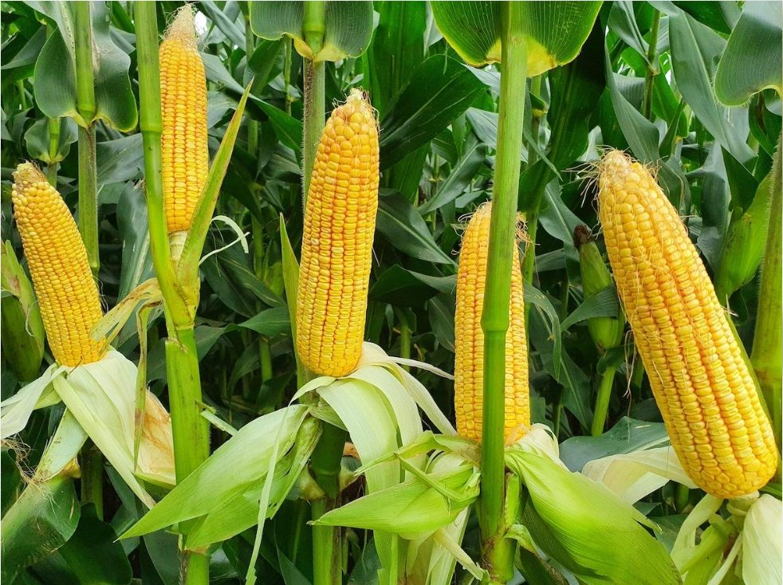
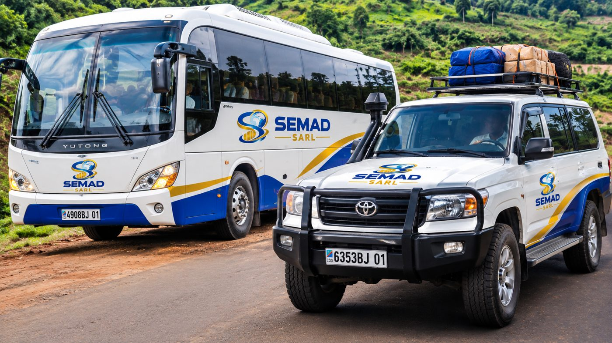

General trade
Supply and distribution of goods and commercial solutions.
Kolwezi • Democratic Republic of the Congo
SEMAD SARL is a multisector company developing projects and business opportunities across six areas of activity.
Discover our servicesSaint Étienne Mwamba Développement is based in Kolwezi, Lualaba Province. Our ambition is to contribute to sustainable development through responsible business, practical training and collaboration.
We value trust, responsibility, excellence and sustainable development.
Supply and distribution of goods and commercial solutions.

Agricultural development and poultry farming.
Support and collaboration tailored to organizational needs.
Practical computer skills, sewing and tailoring.

Development of security and guarding services.

Development of road transport solutions.
Images illustrate planned activities and do not establish operational status.
Explore opportunities to collaborate with SEMAD SARL. The detailed forms and current announcements are available in French.
Kolwezi, Lualaba, Democratic Republic of the Congo